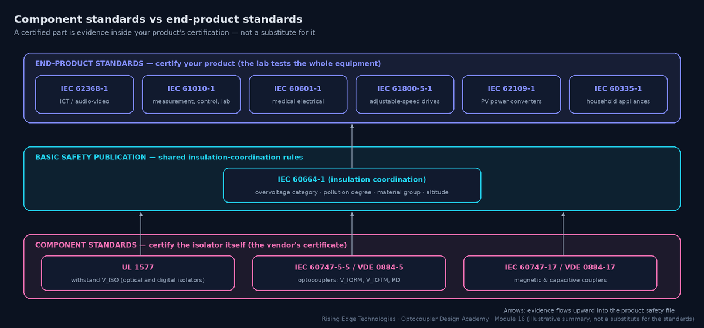
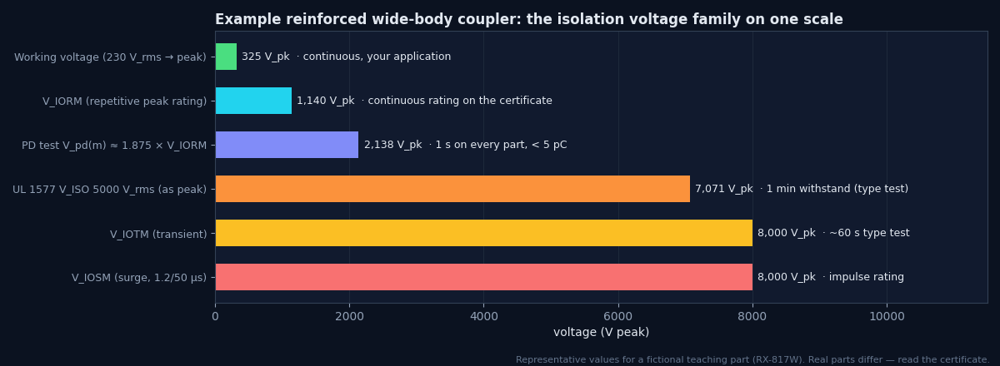
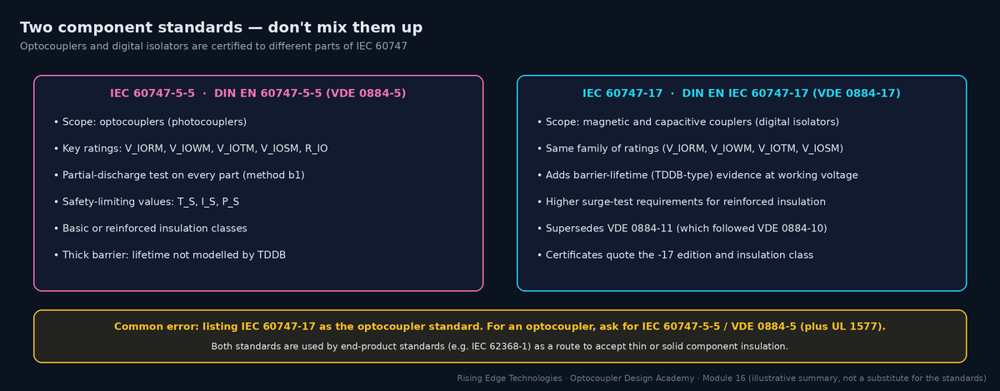
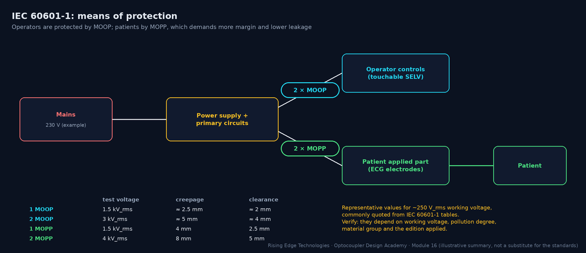
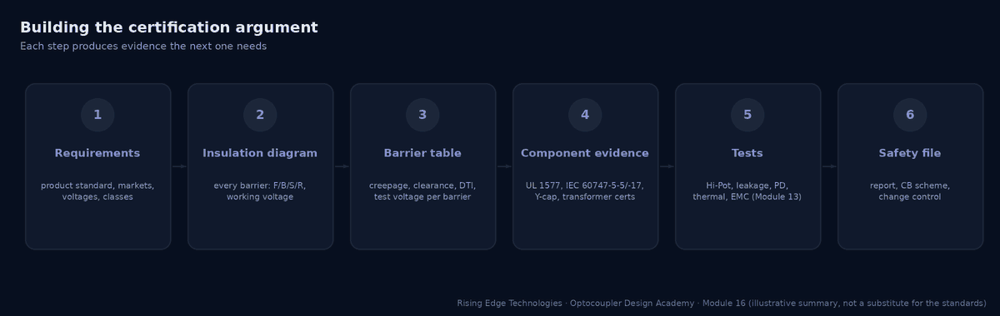
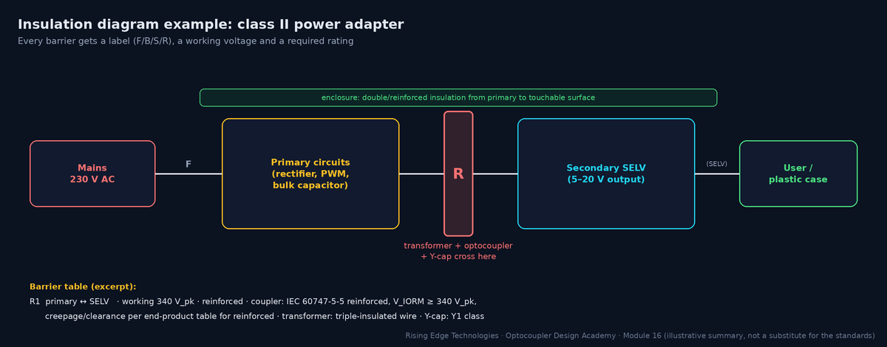

Industry Standards and Certifications
The regulatory landscape governing isolation components and end products: component standards (UL 1577; IEC 60747-5-5 / VDE 0884-5 for optocouplers; IEC 60747-17 / VDE 0884-17 for digital isolators) versus end-product standards (IEC 61010, IEC 60601-1, IEC 62368-1), automotive functional safety (ISO 26262), and how to build a coherent certification argument.
Illustrations and animations are original teaching drawings, not to scale. Values marked representative are typical of common parts; always confirm against the current datasheet or standard you design to.
Two kinds of standard meet at the isolation barrier. Component standards certify the isolator: the vendor pays for the tests and you receive a certificate. End-product standards certify your equipment: they define which barriers you need, what working voltage and insulation class each barrier has, and how the lab tests the finished product.

Why a certified part isn’t enough
The certificate covers the part as tested: its own creepage, its internal barrier. It knows nothing about your footprint, slots, coating, pollution degree, altitude, other parts bridging the barrier, or whether you used it at a higher voltage than rated.
What the component certificate buys you
End-product standards generally accept a component certified to the right standard and class as evidence for its internal insulation, so the lab does not have to decap it or measure DTI. That can save months.
Who decides the requirement
Your end-product standard, applied through its insulation-coordination rules (based on IEC 60664-1): working voltage, overvoltage category, pollution degree, material group and altitude.
Markets add standards
CB scheme (IEC) for international certification; UL/CSA for North America; CQC for China; national deviations. Plan the certificate list per market early.
UL 1577 (“Optical Isolators”) is the North-American component standard, and many digital isolators are also recognised under it. It is a withstand standard: the part must survive a stated isolation voltage.
VISO
The rated withstand voltage, e.g. 5000 Vrms for 1 minute (type test). Common ratings are 2500, 3750, 5000 and 5700 Vrms.
Production test
Every part is tested at a higher voltage for a short time, typically 1.2 × VISO for 1 s. The datasheet states the exact condition.
Recognition, not listing
Parts carry UL Recognized Component status under a file number. Your product still needs its own listing or certification.
What it doesn’t say
No working voltage, no PD test, no lifetime. A 5 kVrms VISO does not mean you may run 5 kV continuously, or even 1 kV: that is what VIORM/VIOWM in IEC 60747-5-5 are for.
Worked example — VISO vs the product Hi-Pot
A 230 V product needs a reinforced Hi-Pot of (representative) 3000 Vrms for 60 s at type test and 1 s in production.
- A coupler with VISO = 5000 Vrms passes the 3000 Vrms test with 1.67× margin.
- A 2500 Vrms part would be over-stressed by every production test: the wrong part, regardless of its working-voltage rating.
- The working voltage (325 Vpk) must still be checked against VIORM from the IEC 60747-5-5 certificate.
IEC 60747-5-5 (Europe: DIN EN 60747-5-5, VDE 0884-5) is the optocoupler standard that defines working and transient ratings, a 100 % partial-discharge test and safety-limiting values. It is what most end-product standards refer to when they accept an optocoupler as reinforced or basic insulation.
| Rating | Meaning | Compare with |
|---|---|---|
| VIORM | Maximum repetitive peak isolation voltage (continuous, Vpeak) | Peak working voltage: √2 × Vrms, or DC-link maximum |
| VIOWM | Maximum working isolation voltage (Vrms) | RMS working voltage used in creepage tables |
| VIOTM | Maximum transient isolation voltage (Vpeak, type-tested ~60 s) | Temporary overvoltages and dielectric test levels |
| VIOSM | Maximum surge isolation voltage (1.2/50 µs, Vpeak) | Rated impulse voltage for your overvoltage category |
| VPR / Vpd(m) | Partial-discharge test voltage (e.g. ~1.875 × VIORM, 1 s, 100 %; < 5 pC) | Evidence of PD-free operation at VIORM |
| RIO | Isolation resistance (at 500 V DC, at 25 °C and at TS) | Leakage budget (Module 13) |
| TS, IS, PS | Safety-limiting case temperature, input current and output power | Your worst single-fault conditions |
| Climatic category, pollution degree, CTI | Test climate (e.g. 55/110/21), PD for its own creepage, material group | Your environment and board spacing |

Safety-limiting values
In a fault (a shorted driver, a failed resistor), the LED current or output power can rise far above normal. IEC 60747-5-5 requires the vendor to state limits (TS, IS, PS) up to which the insulation remains intact, usually with a derating curve versus temperature. Your design must keep single-fault conditions below them.
Worked example — checking IS
A coupler lists IS = 150 mA (input, representative). The LED is driven from 24 V through 2.2 kΩ.
- Normal: (24 − 1.2) / 2200 = 10.4 mA.
- Single fault: the series resistor is shorted (or a lower value fitted in error). The current is then limited only by the source: a 24 V rail can deliver amps, far above IS.
- Fix: split the resistor into two in series (a single short then leaves 1.1 kΩ → ~21 mA), or add a fuse or current-limited source. Record this in the insulation analysis.
Digital isolators use very thin barriers (Module 15) whose lifetime depends on the field across them, so they have their own component standard: IEC 60747-17 (DIN EN IEC 60747-17, VDE 0884-17) for magnetic and capacitive couplers. In Germany it followed VDE 0884-10 and then VDE 0884-11, which VDE 0884-17 superseded.

| Aspect | IEC 60747-5-5 (optocouplers) | IEC 60747-17 (magnetic/capacitive) |
|---|---|---|
| Devices | Photocouplers / optocouplers | Digital isolators, isolated gate drivers, isolated amplifiers with magnetic or capacitive barriers |
| Voltage ratings | VIORM, VIOWM, VIOTM, VIOSM | Same family of ratings |
| Partial discharge | 100 % PD test | PD test as well |
| Lifetime | Not modelled; thick barrier | Barrier-life (TDDB-type) evidence at elevated working voltage, stricter for reinforced |
| Surge | VIOSM test | VIOSM test, with higher requirements for reinforced (10 kV-class) |
| Typical mistake | Listed as “IEC 60747-17” in documentation | Datasheets still quoting superseded VDE 0884-11 certificates |
IEC 60664-1 is the basic safety publication behind nearly all end-product insulation rules. You rarely certify to it directly, but its concepts are in every product standard.
Overvoltage category (OVC)
I to IV, from protected electronics to the origin of the installation. It sets the transient (impulse) voltage the clearances must withstand.
Rated impulse voltage
For a 230/400 V system (300 V to earth): about 1.5 / 2.5 / 4 / 6 kV for OVC I–IV. Reinforced insulation is designed for the next step up. (Representative; see the standard’s table.)
Clearance
The shortest distance through air: set by the impulse voltage (and altitude correction above 2000 m).
Creepage
The shortest distance along a surface: set by the rms working voltage, the pollution degree (1–4) and the material group (CTI I–IIIb).
Solid insulation
Through-insulation: must withstand the dielectric test and, for thin layers, meet extra requirements; component standards cover the part’s internal barrier.
Altitude
Clearances need a multiplication factor above 2000 m (e.g. about 1.48 at 5000 m); PV and EV equipment often ship to high sites.
Distances and factors above are widely quoted representative figures. Cite IEC 60664-1 table numbers from the edition you apply rather than this page.
IEC 62368-1 covers ICT and audio/video equipment and has replaced IEC 60950-1 and IEC 60065. It is hazard-based: classify energy sources, then put safeguards between them and people.
Energy source classes
ES1 (safe to touch), ES2 (limited), ES3 (hazardous, e.g. mains). An ES3 source needs basic plus supplementary, or reinforced, safeguards to an ordinary person.
Safeguards
Basic, supplementary, reinforced, plus precautionary and skill safeguards. An optocoupler across the primary-to-ES1 boundary acts as a reinforced safeguard when certified accordingly.
Component route
The standard accepts optocouplers certified to IEC 60747-5-5 (and isolators to IEC 60747-17) for solid insulation, provided the ratings match the working voltage and class.
Electric strength
Test voltages come from tables based on peak working voltage, transient voltage and insulation grade (basic ≈ 1.5 kVrms, reinforced ≈ 3 kVrms for ordinary 230 V mains: representative).
IEC 61010-1 covers electrical equipment for measurement, control and laboratory use: oscilloscopes, power supplies, analysers and much industrial control. Part IEC 61010-2-030 adds requirements for measuring circuits and the familiar measurement categories.
Measurement categories
CAT II (plug-in loads), CAT III (building installation), CAT IV (origin of supply). An isolated measuring input rated “600 V CAT III” must withstand the transients of that environment across every barrier behind it.
Isolated channels
Channel-to-channel and channel-to-earth barriers each get their own rating. Optocouplers or isolated amplifiers in the digital path must match the channel’s class.
Hazardous live
The standard defines limits of voltage, current and energy above which a part is hazardous live; accessible parts must stay below them in normal and single-fault conditions.
IEC 60601-1 is the most demanding common standard for isolation because patients may be connected directly (and may be unable to react). It distinguishes MOOP (means of operator protection) and MOPP (means of patient protection), and it limits leakage currents tightly.

| Applied-part type | Typical use | Patient leakage, normal condition (representative) |
|---|---|---|
| B | Body; not usually conductive contact | 100 µA |
| BF | Floating applied part (body contact) | 100 µA |
| CF | Direct cardiac contact | 10 µA |
Representative limits commonly quoted from IEC 60601-1; single-fault limits are higher. Verify against the edition and amendment you certify to.
IEC 61800-5-1 covers the safety of adjustable-speed drive systems. Optocoupler gate drivers, current-sense isolation and control interfaces all sit on its barriers.
Decisive voltage classes
DVC A (safe to touch, e.g. ≤ 25 V AC / 60 V DC in dry conditions) up to DVC C (mains, DC link). Accessible control circuits (DVC A) need protective separation (double or reinforced) from DVC C circuits.
Gate-drive barriers
Inside the power section, the gate-drive coupler between the controller and a high-side switch may be functional or basic, depending on whether the controller side is accessible. Document it in the insulation diagram.
Working voltage
Use the DC-link maximum (including regenerative braking overvoltage) and switching overshoot for VIORM, not the nominal mains.
Related
IEC 62477-1 for general power-electronic converter systems; IEC 60204-1 for the machine.
Automotive adds qualification and functional-safety expectations on top of electrical safety.
AEC-Q100
Stress-test qualification for integrated circuits (digital isolators, isolated gate-driver ICs). Grades set the ambient range: grade 0 −40…+150 °C, grade 1 −40…+125 °C, grade 2 −40…+105 °C, grade 3 −40…+85 °C.
AEC-Q101 / Q102
Qualification for discrete semiconductors (Q101) and discrete optoelectronics (Q102). Automotive optocouplers are typically qualified to one of these; check the datasheet claim.
ISO 26262
Functional safety for road vehicles. You need failure rates (FIT) and failure-mode distributions for the coupler to calculate hardware metrics, plus diagnostics for its dangerous failure modes (e.g. a stuck output).
FIT data
Vendors provide FIT at stated conditions, or you use handbook models (IEC 61709, SN 29500). 1 FIT = 1 failure per 109 device-hours. Optocoupler LED ageing is a wear-out mechanism, handled by design margin (Module 9) rather than by a constant FIT.
HV isolation
ISO 6469-3 and OEM specifications define HV-to-LV isolation for traction systems, typically reinforced or basic plus supplementary at 400–800 V DC.
Worked example — FIT to failure probability
A BMS has 24 couplers at 15 FIT each (representative, at mission-profile temperature).
- Total λ = 24 × 15 = 360 FIT = 360 × 10−9 /h.
- Over 8000 operating hours of vehicle life: P ≈ λt = 360 × 10−9 × 8000 = 2.9 × 10−3 (0.29 %) per vehicle.
- ISO 26262 then asks which fraction of those failures is dangerous and detected. A stuck-HIGH fault in a cell-voltage alarm path needs a diagnostic (e.g. periodic test pulse).
Application-specific standards refine the generic rules for particular equipment. The ones optocoupler designers meet most often:
| Standard | Scope | Isolation relevance |
|---|---|---|
| IEC 61131-2 | Programmable controllers: equipment requirements and tests | Digital input types 1/2/3 (switching thresholds and currents, Module 10), immunity levels; safety via IEC 61010-2-201 |
| IEC 61851 (-1, -23) | Electric-vehicle conductive charging systems | Isolation between mains/DC output and control pilot, communication and user interface; insulation monitoring for DC charging |
| IEC 62109-1 / -2 | Safety of power converters for PV systems | High DC working voltages (up to 1000–1500 V), altitude, OVC of the PV array; isolation of comms and user interfaces |
| IEC 60335-1 | Household appliances | Class I/II construction; functional vs protective insulation of controls |
| IEC 60730-1 | Automatic electrical controls | Controls with isolated sensors and triac outputs (MOC30xx designs) |
A certification body wants to see a coherent argument: every barrier identified, its required class and rating derived, and evidence that each crossing component and spacing meets it. Build it as you design, not the week before the lab visit.


| Barrier | Between | Class | Working voltage | Crossing parts | Spacing required / achieved | Evidence |
|---|---|---|---|---|---|---|
| R1 | Primary ↔ SELV | Reinforced | 340 Vpk / 250 Vrms | T1, U3 (opto), C12 (Y1) | creepage per table / 8.2 mm | U3: UL 1577 + IEC 60747-5-5 cert; T1 report; C12 Y1 cert; Hi-Pot report |
| B1 | Primary ↔ PE chassis | Basic | 250 Vrms | C10, C11 (Y2) | per table / 4.1 mm | Hi-Pot report; Y2 certs |
Evidence file contents
Insulation diagram · barrier table · component certificates (UL, IEC 60747-5-5/-17, Y-caps, transformers, relays) · PCB spacing measurements · test reports · critical-components list with approved alternates.
Critical-components list
Every part crossing a barrier is “safety critical”: its manufacturer and part number are listed in the report. Changing it later needs the certifier’s approval.
Change control
A new coupler source, a layout change near the barrier or a different coating reopens the argument. Put a check in your ECO process.
Two layers
Component standards certify the isolator; end-product standards certify your product and set the requirement.
UL 1577
Withstand VISO for 1 min (production ~1.2× for 1 s); no working voltage.
IEC 60747-5-5 (VDE 0884-5)
The optocoupler standard: VIORM, VIOWM, VIOTM, VIOSM, 100 % PD test, safety-limiting values.
IEC 60747-17 (VDE 0884-17)
For magnetic and capacitive couplers; supersedes VDE 0884-11 and adds barrier-lifetime evidence.
IEC 60664-1
OVC, pollution degree, material group and altitude drive clearances, creepage and impulse ratings.
End products
IEC 62368-1 (replaced 60950-1/60065), 61010-1, 60601-1 (MOOP/MOPP), 61800-5-1 (DVC, protective separation).
Automotive
AEC-Q100 for ICs, Q101/Q102 for discretes and optoelectronics; ISO 26262 needs FIT data and diagnostics.
Argument
Insulation diagram → barrier table → evidence → tests → change control.
Design checklist
Tick items as you review a design. Your ticks are saved in this browser only; use your browser’s print function for a sign-off copy.
Four parts: multiple choice, true/false, a matching exercise and engineering scenarios. Score 80 % on the multiple choice to pass the module.